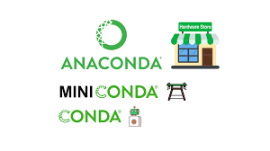
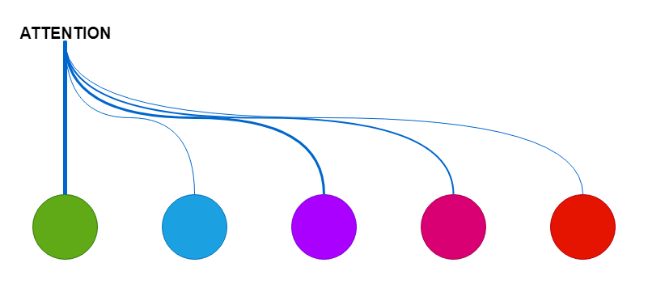
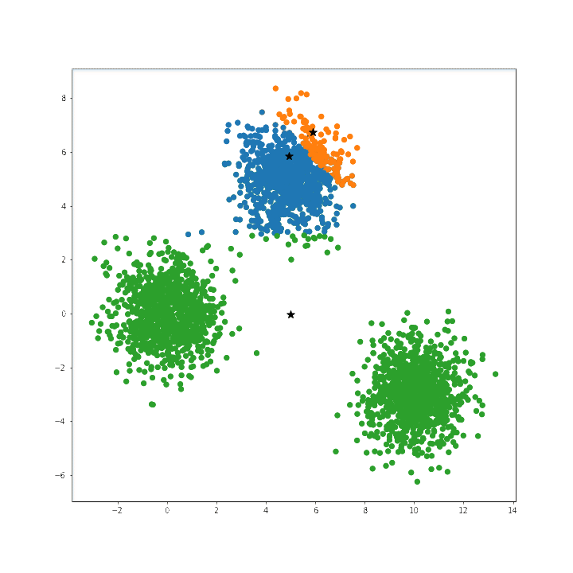
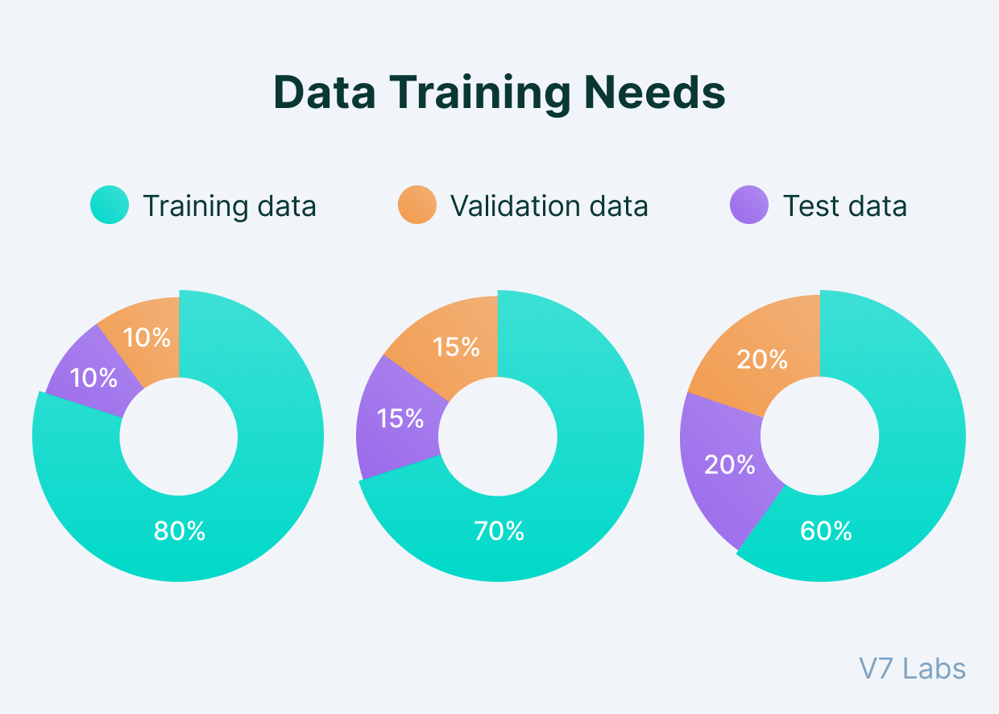

Featured Writing
| Date | Title | Reading Time | |
|---|---|---|---|
|  | Feb 2, 2025 | Why Use Conda for Scientific Computing? | 3 min |
|  | Jan 31, 2025 | Understanding Attention: From Theory to Implementation | 4 min |
|  | Jan 27, 2025 | Hyperparameter Tuning in Clustering Algorithms: A Complete Guide | 5 min |
| Jan 21, 2025 | Markdown: What’s in the name? | 1 min | |
| Sep 21, 2024 | Minimal Data Inspection Before Splitting The Dataset | 5 min | |
| Sep 21, 2024 | sklearn vs R model APIs | 14 min | |
|  | Sep 20, 2024 | Train Dev Test Data Splits | 10 min |

|
Sep 19, 2024 | Model Speciation | 7 min |
| Apr 22, 2024 | Git Repository Search | 5 min | |
| Apr 11, 2024 | Sparsity with PyTorch Tensors | 9 min | |
| Mar 3, 2024 | Developing Pytorch Geometric on M1 Apple Silicon | 7 min | |

|
Feb 9, 2024 | Post With Code and Plot | 1 min |

|
Feb 6, 2024 | Welcome To Synthetic Musings | 1 min |
No matching items